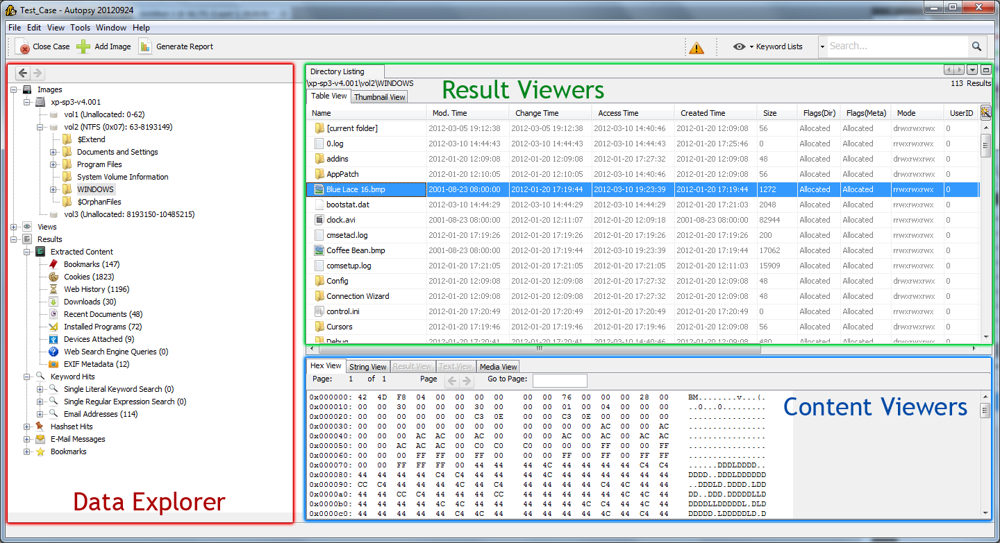

Autopsy allows you to conduct a digital forensic investigation. It is a graphical interface to The Sleuth Kit and other tools. This page outlines the basic concepts of the program. The remainder of the help guide is organized around these concepts.
The main Autopsy features include: importing and image and exploring its file systems, running analysis modules (ingest), viewing ingest results, viewing content and generating reports.
Autopsy is an extensible application; it provides a plug-in framework that allows other other parties to supply plug-ins and supply additional: image and file ingest for new types of analysis, different content viewers and different types of reports to be supported. There are plug-ins for for several ingest modules, viewers and reports that are bundled by default with Autopsy.
All data is organized around the concept of a case. A case can have one or more disk images loaded into it.
The main window has three major areas:
The main take away from this should be that analysis techniques and result categories can be found on the left-hand side, the results from choosing something on the left are always listed in the upper right, and the file contents are displayed in the lower left.
